Rijles in Apeldoorn, van mensen die de stad kennen
Onze instructeurs rijden elke dag door Apeldoorn. Ze kennen de drukke kruispunten, de rotondes en de examenroutes. Je leert in je eigen tempo, in een schakel- of automaatauto, en je weet vanaf de proefles waar je aan toe bent.
gemiddeld uit 951 Google-reviews
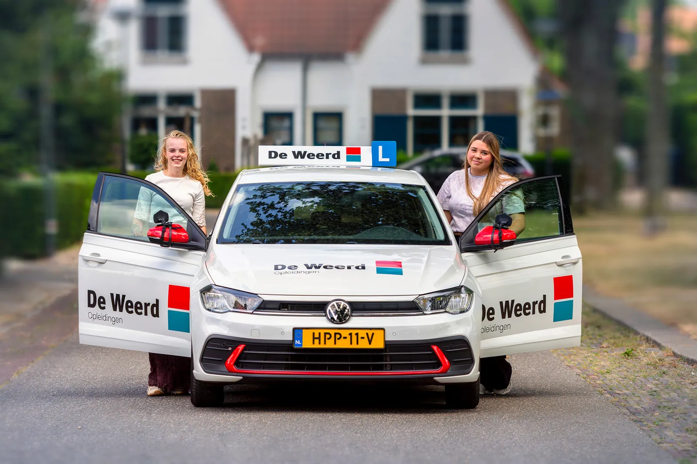
Dit jaar al geslaagd bij De Weerd
- Auto (B)
- 229
- Auto met aanhanger (BE)
- 146
- Bromfiets (AM)
- 127
- Vrachtwagen (C/CE)
- 125
- Motor (A)
- 49
Alle praktijkexamens, inclusief herexamens, van 1 januari tot en met 31 oktober 2026.
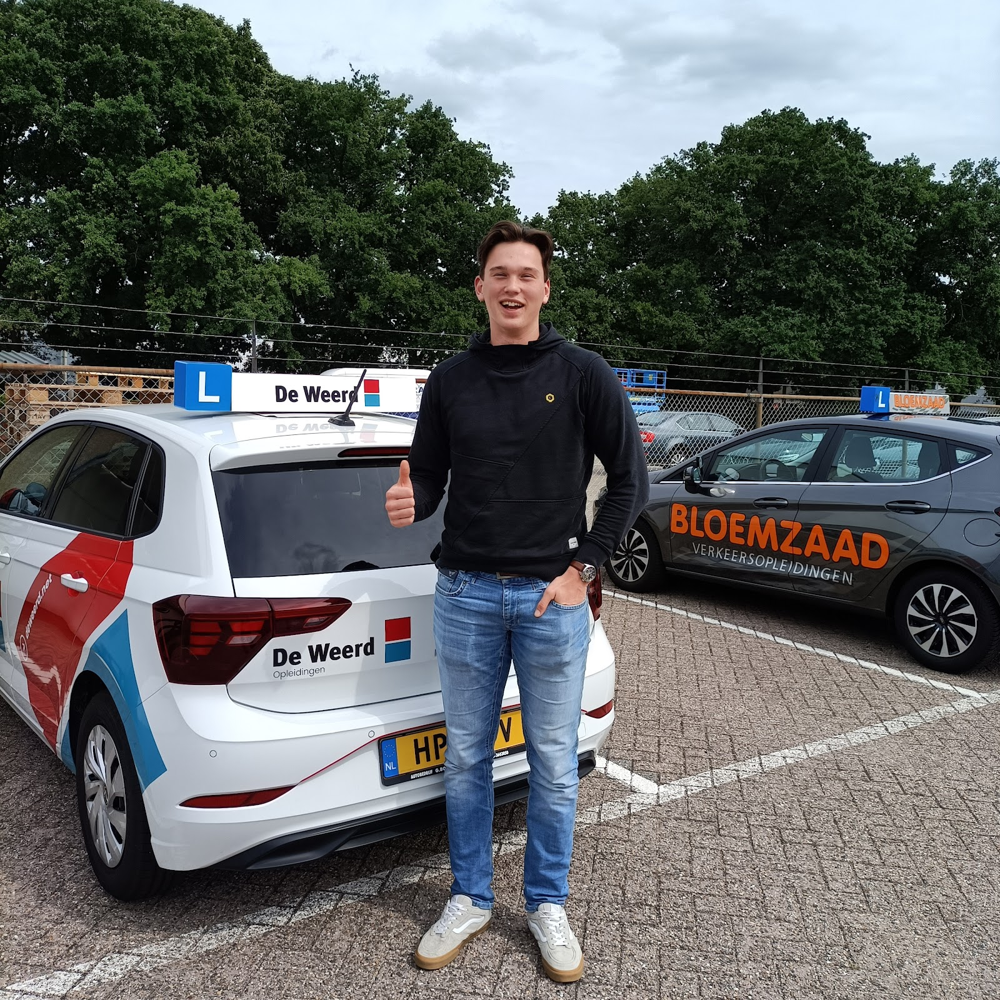
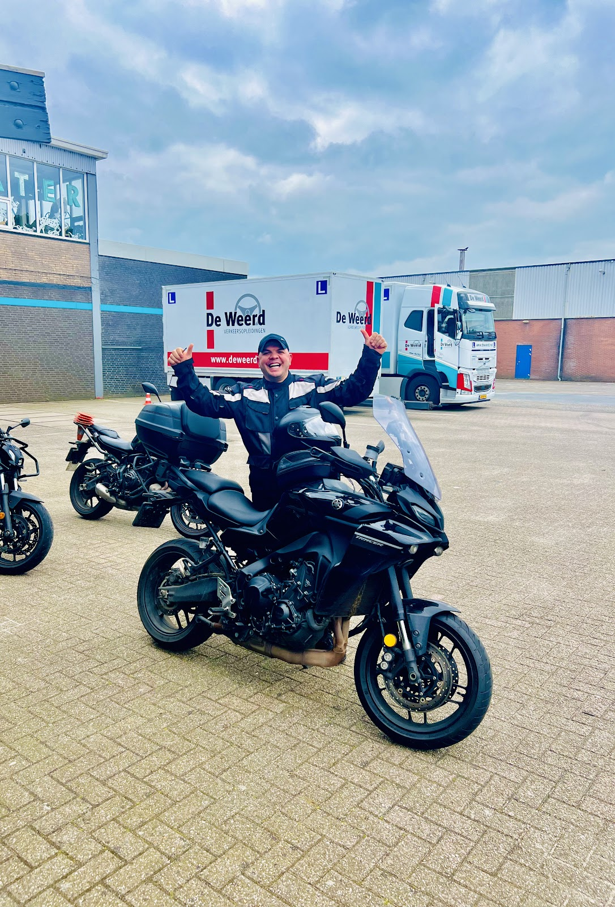
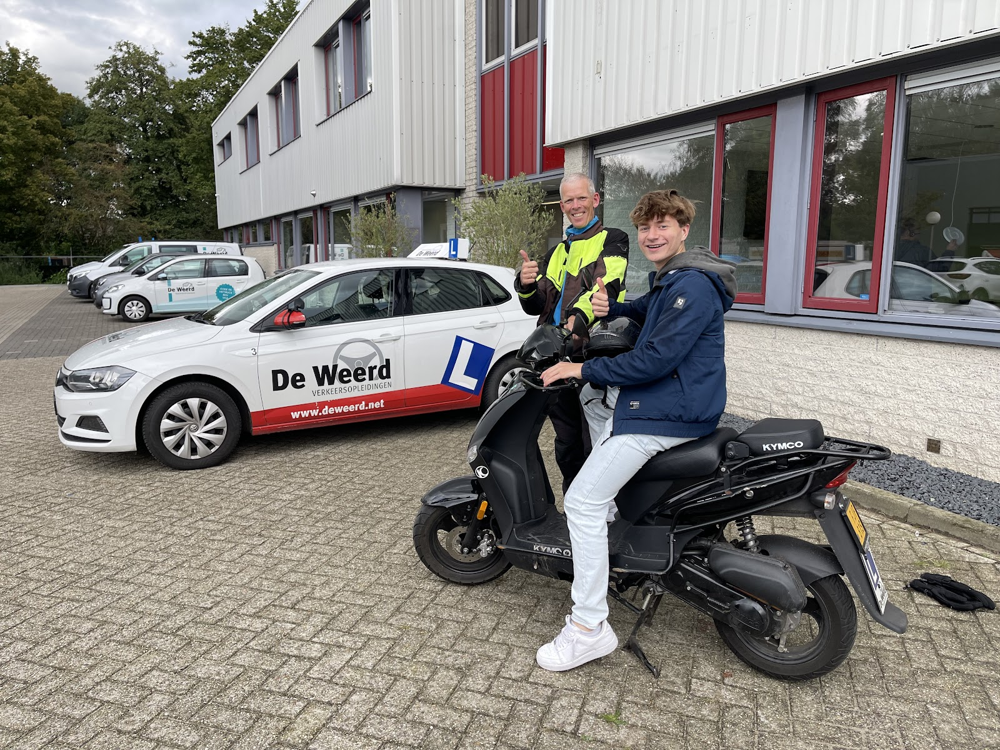
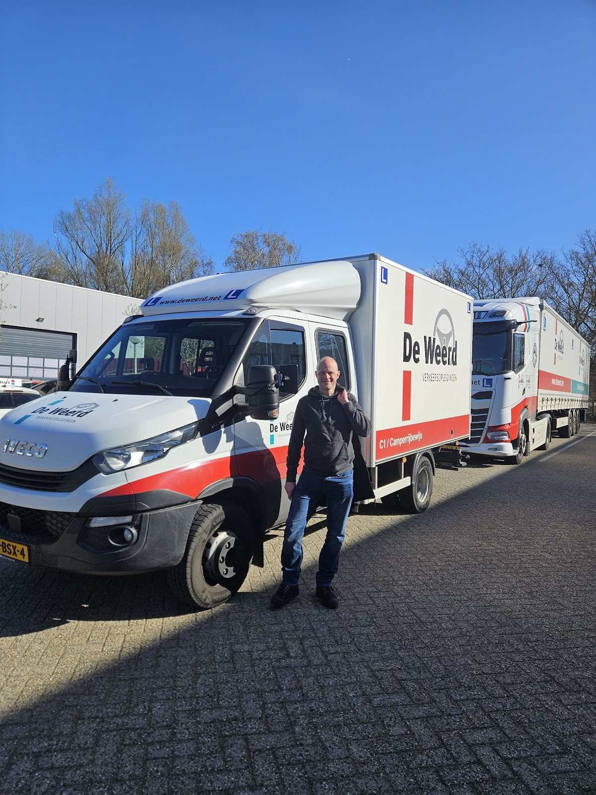
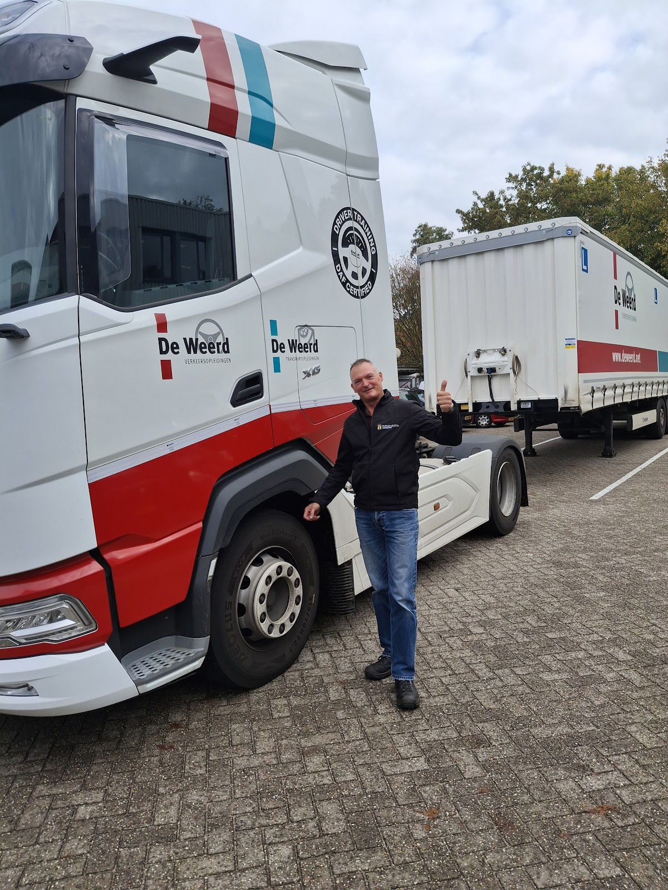
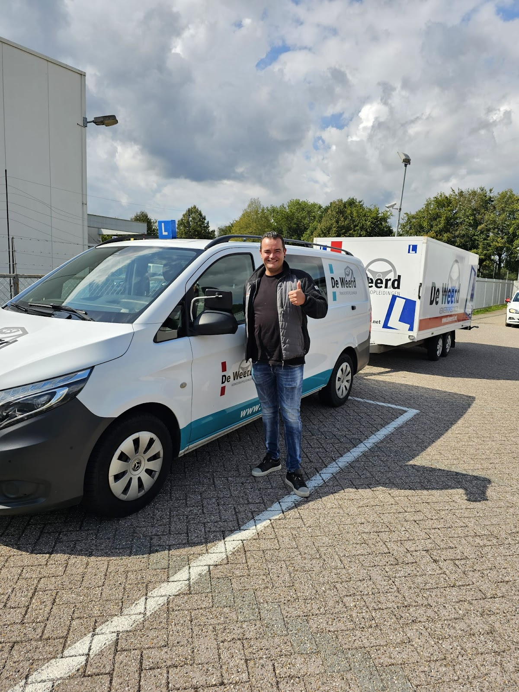
Zo haal je je rijbewijs B
Een opleiding werkt het best als je weet wat er komt. Daarom bouwen we het stap voor stap op, van de eerste kennismaking tot het examen.
-
1
Proefles
Je maakt kennis met je instructeur en ziet hoe een les bij De Weerd gaat. Je krijgt een eerlijk beeld van waar je staat. Ga je verder, dan zit de proefles in je pakket.
-
2
Advies over het aantal lessen
Na de proefles adviseren we welk pakket bij je past. Vergeet niet op tijd je gezondheidsverklaring bij het CBR in te vullen.
-
3
Lessen in je eigen tempo
Eén les per week of meerdere achter elkaar: jij bepaalt het. We plannen flexibel naast school of werk. Als je er klaar voor bent, doe je de tussentijdse toets om te ervaren hoe een examen voelt.
-
4
Praktijkexamen
Vanaf 16,5 jaar mag je beginnen met rijlessen, vanaf 17 jaar examen doen. Geslaagd voor je 18e? Dan rijd je eerst met een coach en een begeleiderspas.
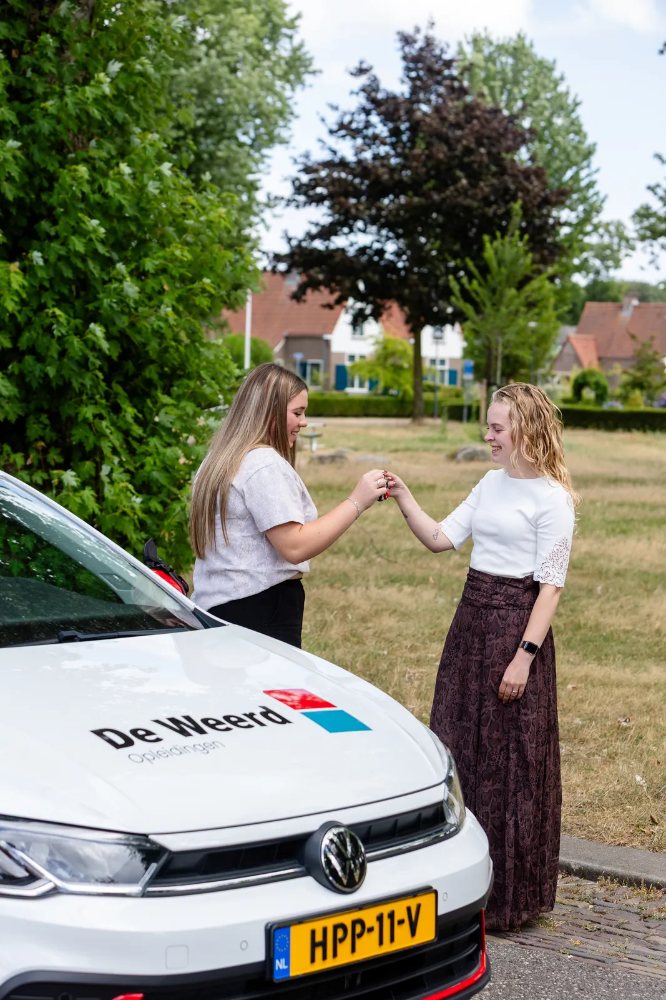
Lespakketten rijbewijs B
Elk pakket bevat de proefles, rijlessen van 50 minuten en het praktijkexamen. Je betaalt makkelijk in termijnen, zo spreid je de kosten.
Basis
€2.185
- Proefles
- 30 rijlessen van 50 minuten
- Praktijkexamen
Start
€2.925
- Proefles
- 40 rijlessen van 50 minuten
- Tussentijdse toets intern
- Praktijkexamen
Veilig
€3.495
- Proefles
- 50 rijlessen van 50 minuten
- Tussentijdse toets intern
- Praktijkexamen
Doorschakelpakketten
Na de proefles kan bij Basis, Start of Veilig een doorschakelpakket worden geadviseerd.
- 6 lessen
- €350
- 10 lessen
- €585
Op de prijzen geldt een brandstoftoeslag, gebaseerd op de landelijke gemiddelde brandstofprijs op 1-1-2026 en elke twee weken bijgesteld. De proefles wordt altijd in rekening gebracht, ook als je niet verder gaat.
Liever in een automaat? Neem contact op voor de kosten.
Welke les past bij jou?
Schakelauto
Leer vlot en veilig rijden in een handgeschakelde auto.
Automaat
Ideaal als je comfortabel wilt rijden zonder te schakelen.
Opfriscursus en rijangst
Weer vertrouwen achter het stuur, met begeleiding op maat.
Rijden met een aanhanger (BE)
Stap voor stap leren om veilig met een aanhanger op pad te gaan.
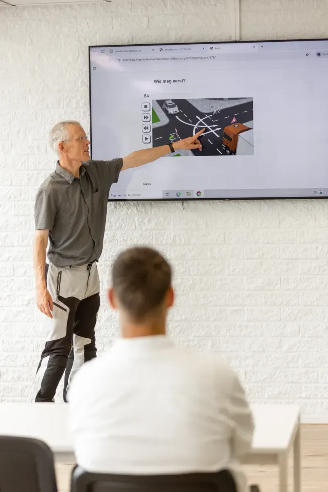
Theorie in één cursus, examen de dag erna
Een complete cursus die aansluit op het praktijkboek: verkeersregels en -borden, verkeerstekens en signalen, verkeersinzicht en gevaarherkenning. Het examen is 50 vragen in 30 minuten.
- Maandag
- Cursus, 14.00 tot 21.00 uur
- Dinsdag
- Lesstof herhalen en theorie-examen (als het CBR plek heeft)
- Theoriecursus incl. lesmateriaal
- €129
- Theorie-examen
- €61,50
Liever één op één? Een individuele theorieles kost €57,50 per 50 minuten.
Van bromfiets tot vrachtwagen
De Weerd leidt op voor alle categorieën, in Apeldoorn, Epe en Zwolle. Beroepschauffeur? Ook voor je Code 95-nascholing kun je bij ons terecht.
- AMBromfiets
- AMotor
- BAuto
- BEAuto met aanhanger
- C1Camper, lichte vrachtwagen
- CVrachtwagen
- CEVrachtwagen met aanhanger
- 95Code 95-nascholing
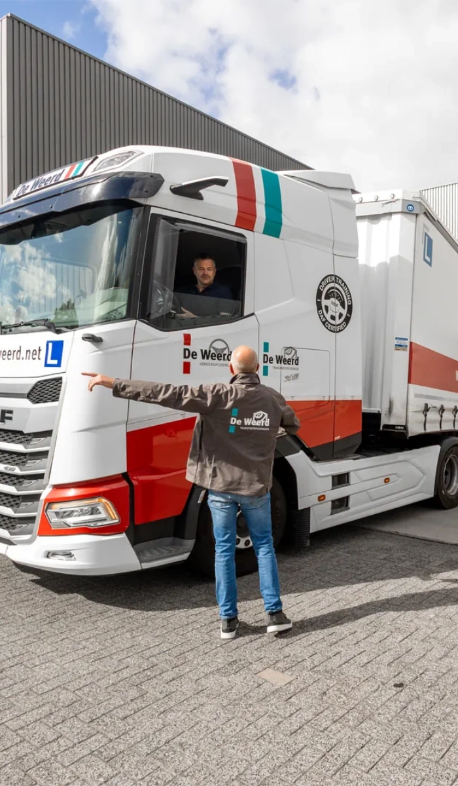
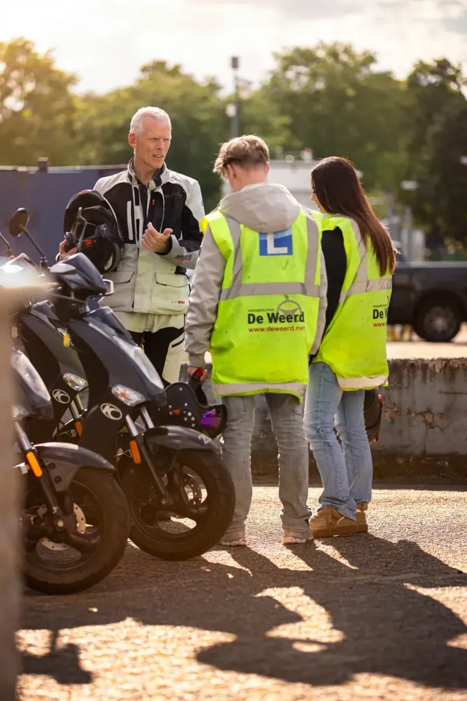
Wat leerlingen zeggen
4,8 van 5 uit 951 reviews op Google
"Ik heb mijn autorijbewijs bij de Weerd gehaald. Ik had Bernard als instructeur. We hadden een hele goeie klik samen. Had het altijd heel gezellig in de auto. Hij legde alles heel goed uit. Hierdoor ben ik in 1 keer geslaagd! Ik zou de Weerd iedereen aanraden. ( ik ga de rijlessen wel missen)"
"Ik heb voor mijn zoon een compleet pakket gekocht voor zijn rijbewijs. De rijlessen van instructeur Ad waren super relaxed, duidelijk en gezellig. Doordat Ad alles duidelijk en helder heeft aangeleerd is hij vandaag in 1x geslaagd! Ad en Rijschool de Weerd.......super bedankt voor jullie inzet!!!"
"Ik kon supersnel terecht voor mijn A rijbewijs, zelfs meteen voor een proefles. De instructeur (Alex) dacht goed mee en de aanwijzingen waren duidelijk en praktisch. Omdat ik al A1 en A2 had, bleek één les al genoeg om klaar te zijn voor mijn A-rijbewijs. De les was erg gezellig en leerzaam. (...)"
"Hier mijn BE rijbewijs bemachtigd. Juiste expertise van Thomas toegepast en in 1x geslaagd. Echt top. Aanrader!"
"Ik heb leuke motor lessen ervaren bij de weerd, Alex en Thomas zijn geduldige instructeurs met daarbij ook een goed humeur. Dank julle wel voor alle leuke lessen 👍"
Langskomen, bellen of mailen
Je vindt ons aan de Minden in Apeldoorn. We geven les in de hele stad, van De Maten tot Zuid en van Osseveld tot Berg en Bos.
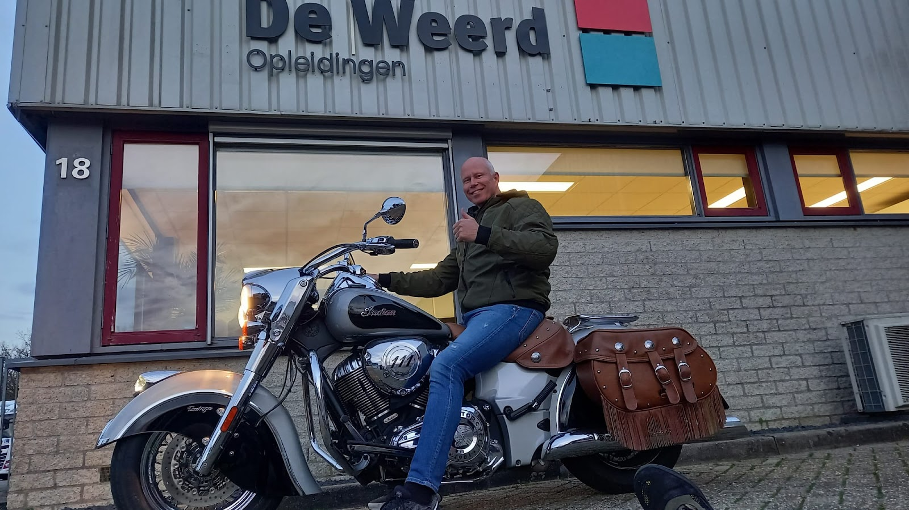
Openingstijden
- Maandag t/m vrijdag
- 08:00 tot 17:30
- Zaterdag
- 07:45 tot 12:30
- Zondag
- gesloten
Plan een proefles
Laat je gegevens achter, dan bellen we je om een moment te kiezen. Liever meteen? Bel 085 073 2400.